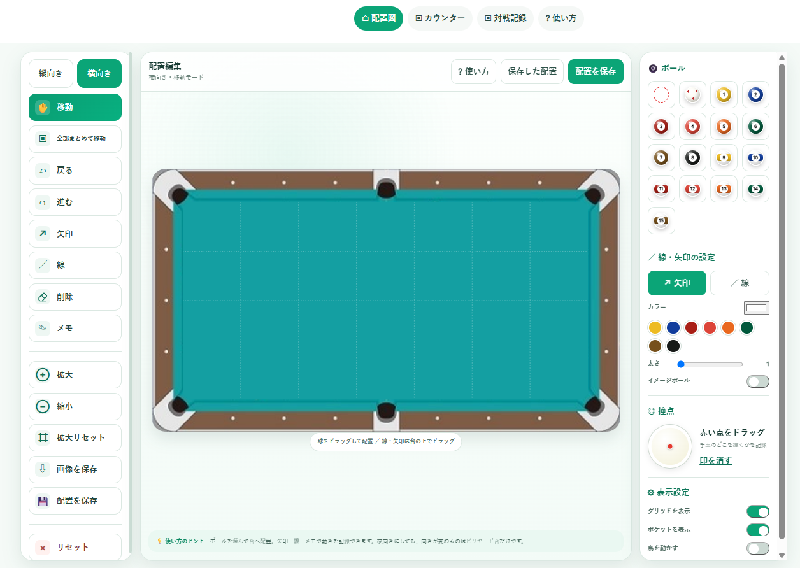
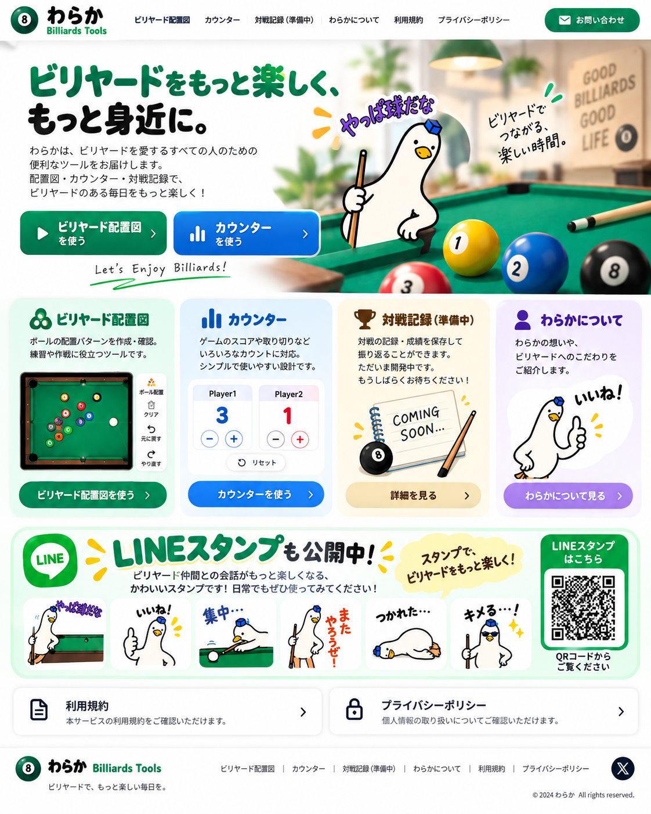
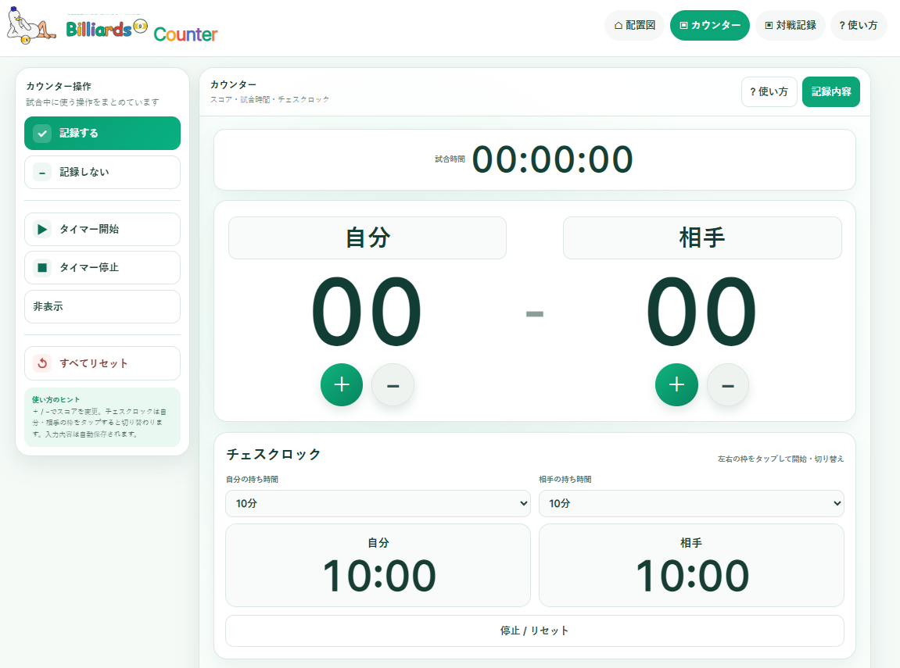
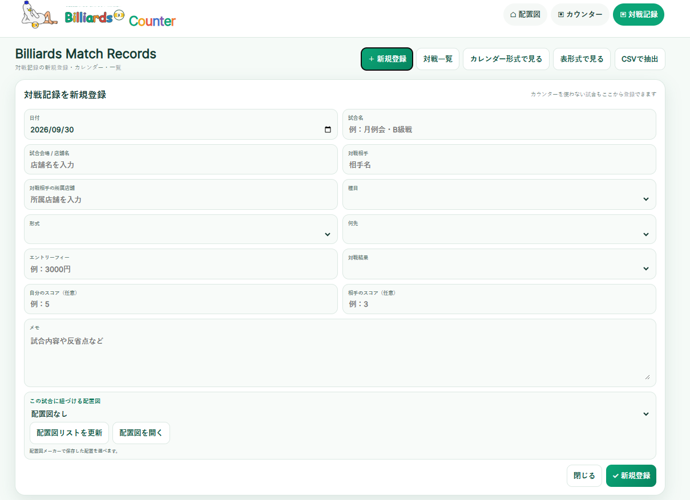

ビリヤード配置図
ボールの配置パターンを作成・確認。練習や作戦に役立つツールです。

配置図の使い方を見る
ビリヤードを愛するすべての人のための
便利なツールをお届けします。
配置図・スコア・対戦記録で、
ビリヤードのある毎日をもっと楽しく！
ボールの配置パターンを作成・確認。練習や作戦に役立つツールです。

配置図の使い方を見るゲームのスコアや試合時間を記録。シンプルで使いやすい設計です。

スコアの使い方を見る対戦の記録・成績を保存して振り返ることができます。

対戦記録の使い方を見るビリヤードへの想いや、ツールへのこだわりをご紹介します。
9BOARDの使い方を見る本サービスはビリヤードの記録・練習支援を目的として提供します。利用者は自己の責任で本サービスを利用するものとします。
本ページおよび各機能では、サービス提供に必要な範囲を超えて個人情報を収集しない方針です。
※機能追加に応じて内容を更新します。